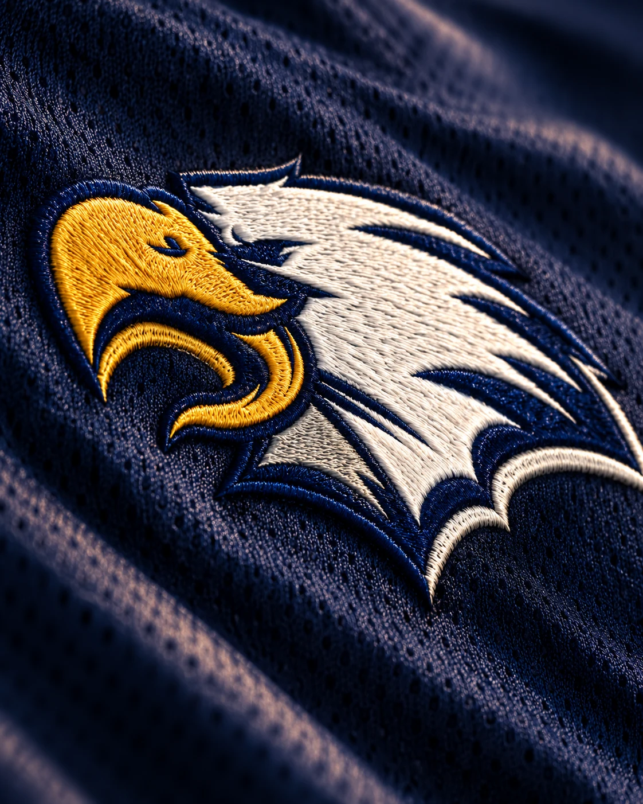

ЛОГОТИПЫ / ФИРМЕННЫЙ СТИЛЬ
ЛАРА
Айдентика футбольной академии «ЛАРА»: эмблема с орлом и мячом, спортивная форма и аксессуары. Тёмно-синяя основа, красные и белые линии объединяют командную экипировку, сумки, головные уборы и сувениры.




ЛОГОТИПЫ / ФИРМЕННЫЙ СТИЛЬ
Айдентика футбольной академии «ЛАРА»: эмблема с орлом и мячом, спортивная форма и аксессуары. Тёмно-синяя основа, красные и белые линии объединяют командную экипировку, сумки, головные уборы и сувениры.
